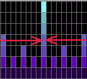
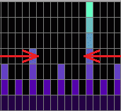

Some benefits to working with farm ticks
- Synchronised crops (encourage all herbs to mature together)
- More herb runs per day (more profit)
- Early disease detection.
- Minimise skipping growth cycles for all plants.
- Improved farming XP.
- Increased efficiency.
- Makes you more attractive.
- And much more.
The Basics

Growth window for trees No growth period for trees
Crops don't continuously grow, they only advance to their to next stage during a growth window. Growth windows for all plants last 5 minutes and are shown on the grid as coloured windows. Black windows are 5 minute periods of inactive growth.
There are only three possible events that can occur during a growth window (coloured window).
- Crops advance one stage (grow or reach full maturity).
- Crops become diseased.
- Crops die (50% chance of death if diseased plants are not cured).
If a diseased crop entering a growth window doesn't die it will not grow.
None of these events can occur outside a growth window.
It's also important to be aware that growth windows are driven by the game servers, they are in no way derived from or determined by the player. This makes them predictable since they run like clockwork and it's because of this predictability we can use them to our advantage.

The time between growth windows varies according to the type of crop. Example: Fruit tree windows occur every 160 minutes, and cactus growth windows occur every 80 minutes. But no matter what type of crop, the growth windows all have a five minute duration.

Time for a disease check
Just knowing where growth windows are means we can now see when plants can grow and when they don't. With this knowledge we can see that the best time to check for diseased crops is right after a growth stage, and we can see when those times are.

To grow in sync, plant
before a growth window
You may want to allow
more or less time
depending on the run
Knowing when growth windows occur can also tell us when to plant, planting all patches just before a growth window can have some benefits. Firstly the crops are in sync. Assuming they don't get diseased they'll all mature together. Plus they can advance a stage shortly after planting. The trick is to not enter a growth window mid farm run. There is much more we can gain from knowing when growth windows occur, I'll explain below...
The not so Basics


Condition 2
5 min countdown hits zero
Condition 1
Inside growth window
There are actually two conditions that must be met for crops to grow. The first condition is the growth window, the second condition is determined by you (the player's farm tick). This second condition is based on timer, a timer that starts/resets when you log in/out. Think of it as repeating 5 minute or 300 second (500 runescape game ticks) countdown timer. Every time it reaches zero the game server checks to see if you're in a growth window. If you are in a growth window and your 5 minute timer has hit zero then the two conditions have been met to allow growth to the next stage. Basically your farm tick must occur somewhere during a growth window for plants to grow.
It's the player's farm tick that determines where in the 5 minute growth window your crops advance. There is one catch with this timer, the first time it runs it counts down from 303 seconds (505 runescape game ticks) meaning it's rare but possible to completely miss a growth window. That 3 seconds extra however is the least of our concerns. The biggest controllable factor in missing growth windows is the fact that logging in/out resets the player's farm tick, meaning the 5 minute countdown restarts.
Real farmers don't hop.
Ok that's not entirely true, real farmers don't skip growth windows when they hop. Keep reading and you too will be hopping seamlessly around growth windows like a true stealthful farming ninja. First some examples showing the effects of logging in and out.

Logging in/out here
means the growth window
will be skipped
Simply nothing will advance a growth stage within the first 5 minutes of logging in or out (flowers can be an exception). Logging in at the start of, or during a farming growth window means when the countdown from 5 minutes has elapsed you will no longer be in the farming growth window, thus the two required conditions for crop growth were never met and nothing grew. Basically 20 minutes grow time has been added to herbs and/or 160 minutes grow time added to fruit trees. An extreme case would be an extra 5 hours and 20 minutes has been added to a spirit tree's grow time. World hopping once every five minutes could effectively put crops in suspended animation.
Bonus xp weekends were a classic example of players losing growth windows. Many players complained on the runescape forums during bonus xp weekends, claiming their trees weren't growing and that the farming skill was bugged. They were in fact logging out frequently to preserve their bonus xp multipliers, but at a cost to losing farming growth windows. I also logged out allot more frequently than normal for the very same reason, yet I managed to do fruit tree + calquat tree runs every day over the weekend without any major difference in grow times.

Logging out here is risky
If your crops haven't yet
advanced, then logging out
skips the growth window
Logging in during a growth window means you skip that current window and nothing grows. Logging out during a growth window can be a little different but it's still risky, if all your crops have already advanced then there may be no negative effect. But if they haven't grown then you lose a growth window. It's just best to avoid logging in/out during farming growth windows and to allow a few minutes either side of them too. I realise this isn't always practical, but you'll benefit greatly from applying this whenever possible.
Conclusion
Okay, now it's time to sum up this information so it can be used in a useful way. In all honesty I have barely scratched the surface of farming mechanics, but the aim here is to provide some information that can be used with this farming tool. I've outlined some basics that should take some of the guesswork out of farming.
There are many farming anomalies in runescape and there will be times where inexplicable things happen. By simply observing these things you might find you can use them to your advantage. For example: It's sometimes possible to squeeze an extra grow cycle in, on one particular herb patch. I'm sure anyone who observes and understands farming ticks will already know of this, and know how to use it.
There are many other things I haven't covered here, like can disease causes a growth window to be lost even if you're paying a farmer to watch crops? It hard to determine if Farming NPC's cure disease or prevent disease. Depending on how this works, this (in theory) may or may not have an effect on grow times. In short, there will be many times where crops get delayed, and the reasons may not be obvious. Just remember there is always a little unpredictability in runescape farming.
As I said there is much more to farming mechanics than what I've written about here, my examples and analogies are only used to form a visual representation for growth windows and shouldn't be concidered absolute. An example being the 5 minute countdown analogy is used just to represent 5 minutes duration of farm ticks, how that's actually determined by the game could be done a number of ways, and for simplicity I described as countdown timer. Keeping that in mind, this information combined with this farm tool should allow you take farming mechanics to any level of complexity you like.
At the top of this page I listed these benefits...
- Synchronised crops (encourage all herbs to mature together)
- More herb runs per day (more profit)
- Early disease detection.
- Minimise skipping growth cycles for all plants.
- Improved farming XP.
- Increased efficiency.
- Makes you more attractive.
- And much more.
I purposely haven't explained step by step procedures to do all those things. The reason why is, the tools and basics of runescape farming mechanics are here, the methods used are up to the individual. Forming your own strategies is a very rewarding thing to do, and if I help inspire anyone to do that, then I consider this a success.
For more information about advanced farming techniques I strongly recommend this thread on RSOF by Zigzagpaul.
FARMING SCIENTIST HQ (and FAQ) Even though some of my information differs, I have to say his knowledge, dedication and insight into the farming skill has been a big part of my inspiration to make this tool.
Oh, how does farming make you more attractive?
I'll just say this.....The farming skillcape is HOT!
Happy Farming!
Indecent Act :)